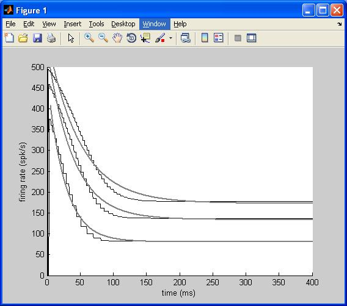
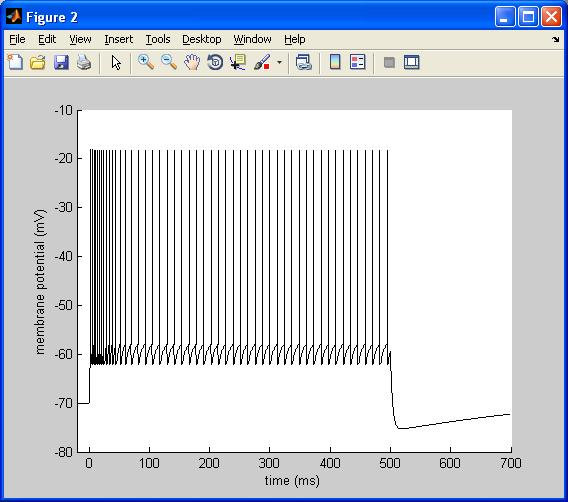

This will reproduce Figure 9 of Gabbiani and Krapp (2006) J Neurophysiol 96:2951-2962. The figure simply shows that a leaky-integrate-and-fire model cannot reproduce spike frequency adaptation as it is seen experimentally in the LGMD neuron. The figure and its inset are reproduced by the matlab m-file, sim_fig_sub.m   To run this m-file, you will first need to convert the c-file lif_ad.c to a MEX file by running the following command after you have changed directory to the folder created when this archive is extracted: MATLAB_HOME/bin/mex lif_ad.c MATLAB_HOME refers to the root directory of the MATLAB implementation. In a Unix operating system, this command can be run from a shell. In Windows, in the dos command box, type mex lif_ad.c Please refer to the MATLAB help on MEX files for other operating systems. contact: gabbiani@bcm.edu